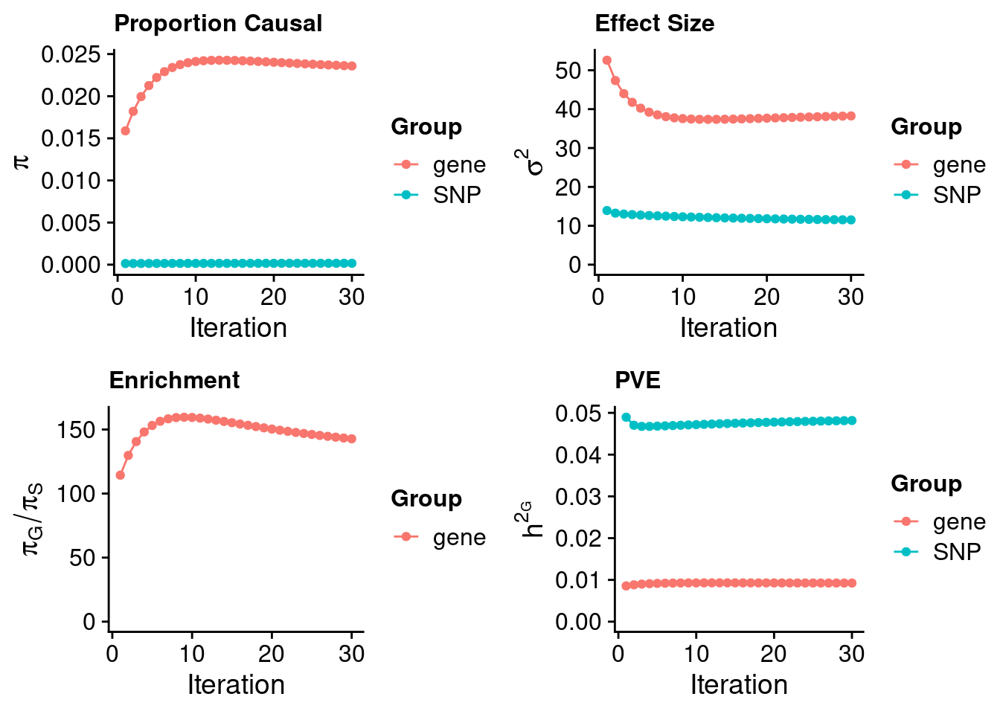

LDL - Liver
sheng Qian
2022-10-18
Last updated: 2023-01-23
Checks: 5 2
Knit directory: cTWAS_analysis/
This reproducible R Markdown analysis was created with workflowr (version 1.7.0). The Checks tab describes the reproducibility checks that were applied when the results were created. The Past versions tab lists the development history.
The R Markdown file has unstaged changes. To know which version of the R Markdown file created these results, you’ll want to first commit it to the Git repo. If you’re still working on the analysis, you can ignore this warning. When you’re finished, you can run wflow_publish to commit the R Markdown file and build the HTML.
Great job! The global environment was empty. Objects defined in the global environment can affect the analysis in your R Markdown file in unknown ways. For reproduciblity it’s best to always run the code in an empty environment.
The command set.seed(20211220) was run prior to running the code in the R Markdown file. Setting a seed ensures that any results that rely on randomness, e.g. subsampling or permutations, are reproducible.
Great job! Recording the operating system, R version, and package versions is critical for reproducibility.
Nice! There were no cached chunks for this analysis, so you can be confident that you successfully produced the results during this run.
Using absolute paths to the files within your workflowr project makes it difficult for you and others to run your code on a different machine. Change the absolute path(s) below to the suggested relative path(s) to make your code more reproducible.
| absolute | relative |
|---|---|
| /project2/xinhe/shengqian/cTWAS/cTWAS_analysis/data/ | data |
| /project2/xinhe/shengqian/cTWAS/cTWAS_analysis/code/ctwas_config_b38.R | code/ctwas_config_b38.R |
Great! You are using Git for version control. Tracking code development and connecting the code version to the results is critical for reproducibility.
The results in this page were generated with repository version 4d68754. See the Past versions tab to see a history of the changes made to the R Markdown and HTML files.
Note that you need to be careful to ensure that all relevant files for the analysis have been committed to Git prior to generating the results (you can use wflow_publish or wflow_git_commit). workflowr only checks the R Markdown file, but you know if there are other scripts or data files that it depends on. Below is the status of the Git repository when the results were generated:
Ignored files:
Ignored: .Rhistory
Ignored: .ipynb_checkpoints/
Untracked files:
Untracked: Proposal plots.R
Untracked: RGS14.pdf
Untracked: RNF186.pdf
Untracked: SCZ_annotation.xlsx
Untracked: SLC8B1.pdf
Untracked: analysis/.ipynb_checkpoints/
Untracked: cache/
Untracked: code/.ipynb_checkpoints/
Untracked: data/.ipynb_checkpoints/
Untracked: data/FUMA_output/
Untracked: data/GO_Terms/
Untracked: data/GTEx_Analysis_v8_eQTL.tar
Untracked: data/IBD_ME/
Untracked: data/LDL/
Untracked: data/LDL_E_S/
Untracked: data/LDL_M/
Untracked: data/LDL_S/
Untracked: data/LDL_multi/
Untracked: data/PGC3_SCZ_wave3_public.v2.tsv
Untracked: data/SCZ/
Untracked: data/SCZ_2014_EUR/
Untracked: data/SCZ_2014_EUR_ME/
Untracked: data/SCZ_2018/
Untracked: data/SCZ_2018_ME/
Untracked: data/SCZ_2018_S/
Untracked: data/SCZ_2020/
Untracked: data/SCZ_S/
Untracked: data/Supplementary Table 15 - MAGMA.xlsx
Untracked: data/Supplementary Table 20 - Prioritised Genes.xlsx
Untracked: data/UKBB/
Untracked: data/UKBB_SNPs_Info.text
Untracked: data/eqtl/
Untracked: data/gene_OMIM.txt
Untracked: data/gene_pip_0.8.txt
Untracked: data/gwas_sumstats/
Untracked: data/magma.genes.out
Untracked: data/mashr_Heart_Atrial_Appendage.db
Untracked: data/mashr_sqtl/
Untracked: data/mqtl/
Untracked: data/multigroup/
Untracked: data/notes.txt
Untracked: data/scz_2018.RDS
Untracked: data/summary_known_genes_annotations.xlsx
Untracked: temp_LDR/
Untracked: top_genes_32.txt
Untracked: top_genes_37.txt
Untracked: top_genes_43.txt
Untracked: top_genes_54.txt
Untracked: top_genes_81.txt
Untracked: z_snp_pos_SCZ.RData
Untracked: z_snp_pos_SCZ_2014_EUR.RData
Untracked: z_snp_pos_SCZ_2018.RData
Untracked: z_snp_pos_SCZ_2020.RData
Unstaged changes:
Deleted: analysis/BMI_S_results.Rmd
Modified: analysis/LDL_Liver_GTEX.Rmd
Modified: analysis/LDL_Liver_mashr.Rmd
Modified: analysis/LDL_Liver_mashr_lite.Rmd
Deleted: code/run_IBD_ctwas_rss_LDR_ME.R
Modified: code/run_LDL_analysis_single_test.sh
Modified: code/run_LDL_ctwas_rss_LDR_single_test.R
Note that any generated files, e.g. HTML, png, CSS, etc., are not included in this status report because it is ok for generated content to have uncommitted changes.
These are the previous versions of the repository in which changes were made to the R Markdown (analysis/LDL_Liver_mashr.Rmd) and HTML (docs/LDL_Liver_mashr.html) files. If you’ve configured a remote Git repository (see ?wflow_git_remote), click on the hyperlinks in the table below to view the files as they were in that past version.
| File | Version | Author | Date | Message |
|---|---|---|---|---|
| Rmd | 4d68754 | sq-96 | 2023-01-23 | update |
| html | 4d68754 | sq-96 | 2023-01-23 | update |
Weight QC
[1] 11502[1] 3520
1 2 3 4 5 6 7 8 9 10 11 12 13 14 15 16 17 18 19 20
338 238 180 136 147 231 190 122 131 131 214 195 61 110 115 193 215 50 269 99
21 22
48 107 [1] 0.7656Load ctwas results
Check convergence of parameters

| Version | Author | Date |
|---|---|---|
| 4d68754 | sq-96 | 2023-01-23 |
#estimated group prior
estimated_group_prior <- estimated_group_prior_all[,ncol(group_prior_rec)]
print(estimated_group_prior) SNP gene
0.0001653 0.0235915 #estimated group prior variance
estimated_group_prior_var <- estimated_group_prior_var_all[,ncol(group_prior_var_rec)]
print(estimated_group_prior_var) SNP gene
11.52 38.25 #estimated enrichment
estimated_enrichment <- estimated_enrichment_all[ncol(group_prior_var_rec)]
print(estimated_enrichment)[1] 142.8#report sample size
print(sample_size)[1] 343621#report group size
print(group_size) SNP gene
8696600 3520 #estimated group PVE
estimated_group_pve <- estimated_group_pve_all[,ncol(group_prior_rec)]
print(estimated_group_pve) SNP gene
0.048163 0.009244 #total PVE
sum(estimated_group_pve)[1] 0.05741#attributable PVE
estimated_group_pve/sum(estimated_group_pve) SNP gene
0.839 0.161 Genes with highest PIPs
#distribution of PIPs
hist(ctwas_gene_res$susie_pip, xlim=c(0,1), main="Distribution of Gene PIPs")
| Version | Author | Date |
|---|---|---|
| 4d68754 | sq-96 | 2023-01-23 |
#genes with PIP>0.8 or 20 highest PIPs
head(ctwas_gene_res[order(-ctwas_gene_res$susie_pip),report_cols], max(sum(ctwas_gene_res$susie_pip>0.8), 20)) genename region_tag susie_pip mu2 PVE z num_eqtl
4433 PSRC1 1_67 1.0000 1652.10 4.808e-03 -41.687 1
2454 ST3GAL4 11_77 1.0000 172.26 5.013e-04 13.376 2
11327 HPR 16_38 1.0000 160.58 4.673e-04 -17.963 2
3720 INSIG2 2_69 1.0000 68.08 1.981e-04 -8.983 3
5988 FADS1 11_34 0.9999 163.14 4.747e-04 12.926 2
NA.407 <NA> 1_121 0.9995 202.13 5.879e-04 -15.108 1
10612 TRIM39 6_24 0.9990 70.98 2.064e-04 8.840 3
8523 TNKS 8_12 0.9942 74.80 2.164e-04 11.039 2
1597 PLTP 20_28 0.9940 60.45 1.749e-04 -5.732 1
5542 CNIH4 1_114 0.9931 40.46 1.170e-04 6.146 2
4315 ANGPTL3 1_39 0.9929 248.11 7.170e-04 16.132 1
9365 GAS6 13_62 0.9927 70.41 2.034e-04 -8.924 1
1999 PRKD2 19_33 0.9925 29.70 8.579e-05 5.072 2
3754 RRBP1 20_13 0.9924 32.02 9.247e-05 7.008 2
11257 CYP2A6 19_28 0.9842 32.38 9.274e-05 5.407 1
6090 CSNK1G3 5_75 0.9830 83.47 2.388e-04 9.116 1
2092 SP4 7_19 0.9817 101.51 2.900e-04 10.693 1
6387 TTC39B 9_13 0.9777 22.85 6.502e-05 -4.334 3
1114 SRRT 7_62 0.9732 32.63 9.241e-05 5.425 2
6774 PKN3 9_66 0.9504 47.07 1.302e-04 -6.621 1
1009 GSK3B 3_74 0.9351 42.24 1.149e-04 6.475 2
9046 KLHDC7A 1_13 0.9303 20.94 5.670e-05 4.124 1
9054 SPTY2D1 11_13 0.9096 33.33 8.823e-05 -5.557 1
1144 ASAP3 1_16 0.9084 33.50 8.855e-05 5.283 2
6097 ALLC 2_2 0.9041 27.81 7.317e-05 4.919 1
1320 CWF19L1 10_64 0.8853 35.76 9.213e-05 5.741 2
7350 BRI3 7_60 0.8734 28.79 7.319e-05 -5.140 2
11226 CLDN23 8_11 0.8662 23.95 6.038e-05 4.720 2
4680 TBC1D4 13_37 0.8636 20.07 5.043e-05 3.844 2
9827 PALM3 19_11 0.8572 20.18 5.033e-05 3.839 1
7919 PXK 3_40 0.8409 27.67 6.771e-05 -3.792 2
7992 TMEM150A 2_54 0.8393 21.22 5.184e-05 4.079 1
10459 PRMT6 1_66 0.8182 31.85 7.584e-05 -5.324 1
1846 CTSH 15_37 0.8061 20.48 4.805e-05 3.796 2Genes with largest effect sizes
#plot PIP vs effect size
plot(ctwas_gene_res$susie_pip, ctwas_gene_res$mu2, xlab="PIP", ylab="mu^2", main="Gene PIPs vs Effect Size")#genes with 20 largest effect sizes
head(ctwas_gene_res[order(-ctwas_gene_res$mu2),report_cols],20) genename region_tag susie_pip mu2 PVE z num_eqtl
5797 SLC22A3 6_104 0.000000 6791.95 0.000e+00 -6.593 1
10399 LPA 6_104 0.000000 2114.15 0.000e+00 8.120 1
4433 PSRC1 1_67 1.000000 1652.10 4.808e-03 -41.687 1
5429 SYPL2 1_67 0.028366 647.10 5.342e-05 -25.890 2
NA.135 <NA> 6_104 0.000000 560.48 0.000e+00 -7.335 2
6966 ATXN7L2 1_67 0.033411 320.32 3.115e-05 -18.080 2
5375 GEMIN7 19_31 0.000000 276.41 0.000e+00 14.093 2
4315 ANGPTL3 1_39 0.992947 248.11 7.170e-04 16.132 1
NA.181 <NA> 8_83 0.008164 241.66 5.742e-06 14.404 1
NA.407 <NA> 1_121 0.999476 202.13 5.879e-04 -15.108 1
2454 ST3GAL4 11_77 1.000000 172.26 5.013e-04 13.376 2
781 PVR 19_31 0.000000 165.48 0.000e+00 -6.113 2
5988 FADS1 11_34 0.999902 163.14 4.747e-04 12.926 2
11327 HPR 16_38 1.000000 160.58 4.673e-04 -17.963 2
4047 NECTIN2 19_31 0.000000 108.03 0.000e+00 6.273 2
2092 SP4 7_19 0.981672 101.51 2.900e-04 10.693 1
9251 ZNF329 19_39 0.060635 97.71 1.724e-05 9.498 2
9910 RHCE 1_18 0.169841 97.63 4.826e-05 10.120 2
9428 TMEM50A 1_18 0.127944 97.18 3.619e-05 10.082 1
9438 EMILIN3 20_25 0.044392 94.40 1.220e-05 9.589 2Genes with highest PVE
#genes with 20 highest pve
head(ctwas_gene_res[order(-ctwas_gene_res$PVE),report_cols],20) genename region_tag susie_pip mu2 PVE z num_eqtl
4433 PSRC1 1_67 1.0000 1652.10 4.808e-03 -41.687 1
4315 ANGPTL3 1_39 0.9929 248.11 7.170e-04 16.132 1
NA.407 <NA> 1_121 0.9995 202.13 5.879e-04 -15.108 1
2454 ST3GAL4 11_77 1.0000 172.26 5.013e-04 13.376 2
5988 FADS1 11_34 0.9999 163.14 4.747e-04 12.926 2
11327 HPR 16_38 1.0000 160.58 4.673e-04 -17.963 2
2092 SP4 7_19 0.9817 101.51 2.900e-04 10.693 1
6090 CSNK1G3 5_75 0.9830 83.47 2.388e-04 9.116 1
8523 TNKS 8_12 0.9942 74.80 2.164e-04 11.039 2
10612 TRIM39 6_24 0.9990 70.98 2.064e-04 8.840 3
9365 GAS6 13_62 0.9927 70.41 2.034e-04 -8.924 1
3720 INSIG2 2_69 1.0000 68.08 1.981e-04 -8.983 3
1597 PLTP 20_28 0.9940 60.45 1.749e-04 -5.732 1
6774 PKN3 9_66 0.9504 47.07 1.302e-04 -6.621 1
5542 CNIH4 1_114 0.9931 40.46 1.170e-04 6.146 2
1009 GSK3B 3_74 0.9351 42.24 1.149e-04 6.475 2
10708 NYNRIN 14_3 0.7674 47.44 1.060e-04 7.010 3
11257 CYP2A6 19_28 0.9842 32.38 9.274e-05 5.407 1
3754 RRBP1 20_13 0.9924 32.02 9.247e-05 7.008 2
1114 SRRT 7_62 0.9732 32.63 9.241e-05 5.425 2Genes with largest z scores
#genes with 20 largest z scores
head(ctwas_gene_res[order(-abs(ctwas_gene_res$z)),report_cols],20) genename region_tag susie_pip mu2 PVE z num_eqtl
4433 PSRC1 1_67 1.000000 1652.10 4.808e-03 -41.687 1
5429 SYPL2 1_67 0.028366 647.10 5.342e-05 -25.890 2
6966 ATXN7L2 1_67 0.033411 320.32 3.115e-05 -18.080 2
11327 HPR 16_38 1.000000 160.58 4.673e-04 -17.963 2
4315 ANGPTL3 1_39 0.992947 248.11 7.170e-04 16.132 1
NA.407 <NA> 1_121 0.999476 202.13 5.879e-04 -15.108 1
NA.181 <NA> 8_83 0.008164 241.66 5.742e-06 14.404 1
5375 GEMIN7 19_31 0.000000 276.41 0.000e+00 14.093 2
2454 ST3GAL4 11_77 1.000000 172.26 5.013e-04 13.376 2
5988 FADS1 11_34 0.999902 163.14 4.747e-04 12.926 2
8523 TNKS 8_12 0.994247 74.80 2.164e-04 11.039 2
2092 SP4 7_19 0.981672 101.51 2.900e-04 10.693 1
9910 RHCE 1_18 0.169841 97.63 4.826e-05 10.120 2
9428 TMEM50A 1_18 0.127944 97.18 3.619e-05 10.082 1
2309 KPNB1 17_27 0.177130 93.33 4.811e-05 -9.790 2
9438 EMILIN3 20_25 0.044392 94.40 1.220e-05 9.589 2
9251 ZNF329 19_39 0.060635 97.71 1.724e-05 9.498 2
10475 TBKBP1 17_27 0.038167 87.99 9.774e-06 -9.319 2
9718 CEACAM19 19_31 0.000000 60.43 0.000e+00 -9.294 2
6090 CSNK1G3 5_75 0.983020 83.47 2.388e-04 9.116 1Comparing z scores and PIPs
#set nominal signifiance threshold for z scores
alpha <- 0.05
#bonferroni adjusted threshold for z scores
sig_thresh <- qnorm(1-(alpha/nrow(ctwas_gene_res)/2), lower=T)
#Q-Q plot for z scores
obs_z <- ctwas_gene_res$z[order(ctwas_gene_res$z)]
exp_z <- qnorm((1:nrow(ctwas_gene_res))/nrow(ctwas_gene_res))
plot(exp_z, obs_z, xlab="Expected z", ylab="Observed z", main="Gene z score Q-Q plot")
abline(a=0,b=1)
#plot z score vs PIP
plot(abs(ctwas_gene_res$z), ctwas_gene_res$susie_pip, xlab="abs(z)", ylab="PIP")
abline(v=sig_thresh, col="red", lty=2)#number of significant z scores
sum(abs(ctwas_gene_res$z) > sig_thresh)[1] 113#proportion of significant z scores
mean(abs(ctwas_gene_res$z) > sig_thresh)[1] 0.0321#genes with most significant z scores
head(ctwas_gene_res[order(-abs(ctwas_gene_res$z)),report_cols],20) genename region_tag susie_pip mu2 PVE z num_eqtl
4433 PSRC1 1_67 1.000000 1652.10 4.808e-03 -41.687 1
5429 SYPL2 1_67 0.028366 647.10 5.342e-05 -25.890 2
6966 ATXN7L2 1_67 0.033411 320.32 3.115e-05 -18.080 2
11327 HPR 16_38 1.000000 160.58 4.673e-04 -17.963 2
4315 ANGPTL3 1_39 0.992947 248.11 7.170e-04 16.132 1
NA.407 <NA> 1_121 0.999476 202.13 5.879e-04 -15.108 1
NA.181 <NA> 8_83 0.008164 241.66 5.742e-06 14.404 1
5375 GEMIN7 19_31 0.000000 276.41 0.000e+00 14.093 2
2454 ST3GAL4 11_77 1.000000 172.26 5.013e-04 13.376 2
5988 FADS1 11_34 0.999902 163.14 4.747e-04 12.926 2
8523 TNKS 8_12 0.994247 74.80 2.164e-04 11.039 2
2092 SP4 7_19 0.981672 101.51 2.900e-04 10.693 1
9910 RHCE 1_18 0.169841 97.63 4.826e-05 10.120 2
9428 TMEM50A 1_18 0.127944 97.18 3.619e-05 10.082 1
2309 KPNB1 17_27 0.177130 93.33 4.811e-05 -9.790 2
9438 EMILIN3 20_25 0.044392 94.40 1.220e-05 9.589 2
9251 ZNF329 19_39 0.060635 97.71 1.724e-05 9.498 2
10475 TBKBP1 17_27 0.038167 87.99 9.774e-06 -9.319 2
9718 CEACAM19 19_31 0.000000 60.43 0.000e+00 -9.294 2
6090 CSNK1G3 5_75 0.983020 83.47 2.388e-04 9.116 1SNPs with highest PIPs
#snps with PIP>0.8 or 20 highest PIPs
head(ctwas_snp_res[order(-ctwas_snp_res$susie_pip),report_cols_snps],
max(sum(ctwas_snp_res$susie_pip>0.8), 20)) id region_tag susie_pip mu2 PVE z
14656 rs2495502 1_34 1.0000 305.87 8.901e-04 6.2922
69603 rs1042034 2_13 1.0000 238.93 6.953e-04 16.5730
69609 rs934197 2_13 1.0000 414.85 1.207e-03 33.0609
71339 rs780093 2_16 1.0000 169.08 4.920e-04 -14.1426
366947 rs12208357 6_103 1.0000 246.37 7.170e-04 12.2823
367050 rs60425481 6_104 1.0000 37673.16 1.096e-01 -7.1125
755541 rs113408695 17_39 1.0000 147.08 4.280e-04 12.7688
789399 rs73013176 19_9 1.0000 242.04 7.044e-04 -16.2327
799236 rs62117204 19_31 1.0000 825.94 2.404e-03 -44.6722
799254 rs111794050 19_31 1.0000 773.68 2.252e-03 -33.5996
799287 rs814573 19_31 1.0000 2239.73 6.518e-03 55.5379
799289 rs113345881 19_31 1.0000 783.78 2.281e-03 -34.3186
799292 rs12721109 19_31 1.0000 1359.81 3.957e-03 -46.3258
791930 rs3794991 19_15 1.0000 441.36 1.284e-03 -21.4921
755567 rs8070232 17_39 1.0000 154.27 4.490e-04 -8.0915
69554 rs11679386 2_12 1.0000 134.22 3.906e-04 11.9094
69689 rs1848922 2_13 1.0000 232.19 6.757e-04 25.4123
69612 rs548145 2_13 1.0000 667.51 1.943e-03 33.0860
493942 rs2437818 9_53 1.0000 70.49 2.051e-04 6.3340
502159 rs115478735 9_70 1.0000 309.16 8.997e-04 19.0118
1077630 rs1800961 20_28 1.0000 72.87 2.121e-04 -8.8970
799627 rs150262789 19_32 1.0000 78.48 2.284e-04 -10.8985
754625 rs1801689 17_38 1.0000 81.36 2.368e-04 9.3964
798950 rs73036721 19_30 1.0000 58.35 1.698e-04 -7.7879
441359 rs4738679 8_45 1.0000 108.88 3.169e-04 -11.6999
274124 rs1499279 5_30 1.0000 62.33 1.814e-04 -8.3746
77404 rs72800939 2_28 1.0000 56.23 1.636e-04 -7.8457
789437 rs137992968 19_9 1.0000 115.08 3.349e-04 -10.7526
14667 rs10888896 1_34 1.0000 135.17 3.934e-04 11.8938
7471 rs79598313 1_18 1.0000 47.06 1.369e-04 7.0246
461020 rs13252684 8_83 1.0000 230.52 6.708e-04 11.9644
439964 rs140753685 8_42 1.0000 55.62 1.619e-04 7.7992
798995 rs62115478 19_30 1.0000 183.37 5.336e-04 -14.3262
54531 rs2807848 1_112 1.0000 55.51 1.616e-04 -7.8828
1052221 rs9302635 16_38 1.0000 167.35 4.870e-04 -13.8393
14626 rs11580527 1_34 1.0000 88.74 2.583e-04 -11.1672
14674 rs471705 1_34 1.0000 211.19 6.146e-04 16.2630
348384 rs9496567 6_67 1.0000 39.03 1.136e-04 -6.3402
319169 rs11376017 6_13 0.9999 65.73 1.913e-04 -8.5079
791961 rs113619686 19_15 0.9999 57.37 1.669e-04 0.5939
789463 rs4804149 19_10 0.9999 46.38 1.350e-04 6.5194
77268 rs139029940 2_27 0.9997 39.25 1.142e-04 6.8150
367138 rs374071816 6_104 0.9996 6963.72 2.026e-02 16.2541
789428 rs1569372 19_9 0.9994 281.19 8.178e-04 10.0055
539902 rs17875416 10_71 0.9993 37.97 1.104e-04 -6.2663
323255 rs454182 6_22 0.9993 36.04 1.048e-04 4.7791
789516 rs322144 19_10 0.9992 57.41 1.669e-04 3.9466
605886 rs7397189 12_36 0.9991 34.33 9.982e-05 -5.7710
493915 rs2297400 9_53 0.9989 41.09 1.195e-04 6.6057
789423 rs3745677 19_9 0.9988 91.51 2.660e-04 9.3358
789420 rs147985405 19_9 0.9987 2298.38 6.680e-03 -48.9352
791570 rs2302209 19_14 0.9982 43.16 1.254e-04 6.6360
429691 rs1495743 8_20 0.9978 40.93 1.189e-04 -6.5160
280576 rs7701166 5_45 0.9971 33.67 9.771e-05 -2.4848
734645 rs2255451 16_48 0.9960 37.96 1.100e-04 -6.3628
582737 rs3135506 11_70 0.9957 148.12 4.292e-04 12.3730
582742 rs75542613 11_70 0.9956 35.81 1.038e-04 -6.5344
441327 rs56386732 8_45 0.9954 34.58 1.002e-04 -7.0123
814738 rs76981217 20_24 0.9953 35.33 1.023e-04 7.6925
323692 rs3130253 6_23 0.9942 29.84 8.632e-05 5.6415
621878 rs653178 12_67 0.9927 94.27 2.723e-04 11.0501
610252 rs148481241 12_44 0.9919 27.45 7.924e-05 5.0955
387191 rs217396 7_32 0.9914 68.19 1.968e-04 -9.4286
280517 rs10062361 5_45 0.9877 205.81 5.916e-04 20.3206
138652 rs709149 3_9 0.9857 35.96 1.032e-04 -6.7820
729318 rs4396539 16_37 0.9834 27.34 7.826e-05 -5.2329
145662 rs9834932 3_24 0.9807 65.78 1.878e-04 -8.4816
814689 rs6029132 20_24 0.9801 39.31 1.121e-04 -6.7625
625967 rs11057830 12_76 0.9792 25.82 7.357e-05 4.9296
814742 rs73124945 20_24 0.9782 32.16 9.156e-05 -7.7754
403009 rs3197597 7_61 0.9762 28.92 8.215e-05 -5.0452
461009 rs79658059 8_83 0.9711 273.10 7.718e-04 -16.0220
243931 rs114756490 4_100 0.9707 26.19 7.400e-05 4.9889
387241 rs141379002 7_33 0.9696 25.62 7.230e-05 4.8970
799610 rs34942359 19_32 0.9655 62.49 1.756e-04 -7.0096
822743 rs62219001 21_2 0.9607 26.10 7.297e-05 -4.9484
221202 rs1458038 4_54 0.9604 52.56 1.469e-04 -7.4179
476267 rs1556516 9_16 0.9570 73.35 2.043e-04 -8.9921
591369 rs11048034 12_9 0.9550 35.79 9.947e-05 6.1337
758700 rs4969183 17_44 0.9529 48.75 1.352e-04 7.1693
469072 rs7024888 9_3 0.9507 25.98 7.187e-05 -5.0558
624832 rs1169300 12_74 0.9503 68.16 1.885e-04 8.6855
322716 rs75080831 6_19 0.9460 56.94 1.568e-04 -7.9067
77284 rs4076834 2_27 0.9336 428.47 1.164e-03 -20.1086
566366 rs6591179 11_36 0.9327 24.99 6.784e-05 4.8933
619971 rs1196760 12_63 0.9310 25.89 7.014e-05 -4.8667
77281 rs13430143 2_27 0.9274 78.02 2.106e-04 -3.3445
351120 rs12199109 6_73 0.9238 24.76 6.657e-05 4.8570
1054611 rs2908806 17_7 0.9222 37.24 9.996e-05 -6.0264
192827 rs5855544 3_120 0.9199 23.87 6.390e-05 -4.5937
69606 rs78610189 2_13 0.9172 59.43 1.586e-04 -8.3855
366941 rs9456502 6_103 0.9146 33.18 8.833e-05 5.9640
745084 rs117859452 17_17 0.9081 24.26 6.411e-05 -3.8517
14657 rs1887552 1_34 0.9062 349.25 9.211e-04 -9.8686
799527 rs377297589 19_32 0.9008 50.78 1.331e-04 -6.7865
194614 rs36205397 4_4 0.8982 38.68 1.011e-04 6.1594
725426 rs821840 16_31 0.8959 163.96 4.275e-04 -13.4753
507109 rs10905277 10_8 0.8956 27.89 7.270e-05 5.1258
806012 rs74273659 20_5 0.8953 24.51 6.386e-05 4.6468
539613 rs12244851 10_70 0.8912 36.60 9.492e-05 -4.8831
803822 rs34003091 19_39 0.8891 103.45 2.677e-04 -10.4237
789504 rs322125 19_10 0.8883 102.55 2.651e-04 -7.4704
196839 rs2002574 4_10 0.8837 24.56 6.315e-05 -4.5583
744993 rs3032928 17_17 0.8829 33.85 8.698e-05 6.1119
493935 rs2777788 9_53 0.8791 58.23 1.490e-04 -5.7370
579006 rs201912654 11_59 0.8724 40.09 1.018e-04 -6.3056
634854 rs1012130 13_10 0.8719 39.28 9.967e-05 -2.7810
323663 rs28986304 6_23 0.8676 41.74 1.054e-04 7.3825
818241 rs10641149 20_32 0.8666 27.13 6.842e-05 5.0758
829984 rs2835302 21_17 0.8646 25.71 6.469e-05 -4.6537
120749 rs7569317 2_120 0.8576 43.89 1.095e-04 7.9007
69406 rs6531234 2_12 0.8531 42.19 1.047e-04 -7.1708
484253 rs11144506 9_35 0.8502 26.96 6.671e-05 5.0427
789473 rs58495388 19_10 0.8495 33.86 8.371e-05 5.5313
814707 rs6102034 20_24 0.8438 96.82 2.377e-04 -11.1900
280540 rs3843482 5_45 0.8401 402.71 9.845e-04 25.0344
357323 rs9321207 6_86 0.8319 30.70 7.433e-05 5.4016
813483 rs11167269 20_21 0.8302 57.10 1.380e-04 -7.7950
750212 rs4793601 17_28 0.8237 30.61 7.338e-05 -6.2095
755552 rs9303012 17_39 0.8172 146.84 3.492e-04 2.2591
534403 rs10882161 10_59 0.8167 29.87 7.100e-05 -5.4756
634846 rs1799955 13_10 0.8162 70.55 1.676e-04 -6.6936SNPs with largest effect sizes
#plot PIP vs effect size
#plot(ctwas_snp_res$susie_pip, ctwas_snp_res$mu2, xlab="PIP", ylab="mu^2", main="SNP PIPs vs Effect Size")
#SNPs with 50 largest effect sizes
head(ctwas_snp_res[order(-ctwas_snp_res$mu2),report_cols_snps],50) id region_tag susie_pip mu2 PVE z
367046 rs3106169 6_104 6.281e-01 37722 6.895e-02 11.139
367047 rs3127598 6_104 4.719e-01 37722 5.180e-02 11.135
367055 rs3106167 6_104 4.793e-01 37721 5.261e-02 11.136
367039 rs11755965 6_104 1.129e-01 37711 1.239e-02 11.140
367050 rs60425481 6_104 1.000e+00 37673 1.096e-01 -7.113
367030 rs12194962 6_104 1.571e-07 37631 1.720e-08 11.106
367048 rs3127597 6_104 2.003e-08 37606 2.192e-09 11.145
367009 rs3119311 6_104 0.000e+00 27265 0.000e+00 8.031
367003 rs3127579 6_104 0.000e+00 19863 0.000e+00 7.568
366997 rs10945658 6_104 0.000e+00 17395 0.000e+00 8.309
366992 rs3103352 6_104 0.000e+00 17354 0.000e+00 8.522
366996 rs3119308 6_104 0.000e+00 17352 0.000e+00 8.274
366988 rs3101821 6_104 0.000e+00 17294 0.000e+00 8.528
366994 rs12205178 6_104 0.000e+00 17254 0.000e+00 8.297
366986 rs148015788 6_104 0.000e+00 17037 0.000e+00 8.351
367097 rs3124784 6_104 0.000e+00 14303 0.000e+00 9.680
367098 rs3127596 6_104 0.000e+00 12984 0.000e+00 9.556
367091 rs3127599 6_104 0.000e+00 12917 0.000e+00 9.259
367061 rs2481030 6_104 0.000e+00 12353 0.000e+00 4.811
367026 rs2504949 6_104 0.000e+00 10166 0.000e+00 2.937
367079 rs388170 6_104 0.000e+00 9414 0.000e+00 3.833
367001 rs316013 6_104 0.000e+00 9022 0.000e+00 -3.002
367002 rs316012 6_104 0.000e+00 8914 0.000e+00 -3.074
367082 rs9355288 6_104 0.000e+00 8736 0.000e+00 6.319
366990 rs610206 6_104 0.000e+00 8238 0.000e+00 -2.944
366991 rs595374 6_104 0.000e+00 8222 0.000e+00 -2.921
366998 rs315995 6_104 0.000e+00 8024 0.000e+00 -3.207
366995 rs543435 6_104 0.000e+00 7994 0.000e+00 -3.250
367044 rs452867 6_104 0.000e+00 7570 0.000e+00 -7.124
367053 rs367334 6_104 0.000e+00 7564 0.000e+00 -7.106
367041 rs589931 6_104 0.000e+00 7563 0.000e+00 -7.116
367042 rs600584 6_104 0.000e+00 7563 0.000e+00 -7.113
367043 rs434953 6_104 0.000e+00 7563 0.000e+00 -7.111
367049 rs380498 6_104 0.000e+00 7563 0.000e+00 -7.115
367017 rs3119312 6_104 0.000e+00 7226 0.000e+00 3.771
367138 rs374071816 6_104 9.996e-01 6964 2.026e-02 16.254
367076 rs2872317 6_104 0.000e+00 6656 0.000e+00 6.746
367073 rs2313453 6_104 0.000e+00 6651 0.000e+00 6.718
367143 rs4252185 6_104 4.313e-04 6425 8.065e-06 15.878
367064 rs146184004 6_104 0.000e+00 6335 0.000e+00 6.534
367067 rs624319 6_104 0.000e+00 6260 0.000e+00 -6.291
367066 rs637614 6_104 0.000e+00 6252 0.000e+00 -6.362
367068 rs486339 6_104 0.000e+00 6209 0.000e+00 -6.311
367013 rs316036 6_104 0.000e+00 6097 0.000e+00 -7.009
367065 rs555754 6_104 0.000e+00 6055 0.000e+00 -6.593
367144 rs12212146 6_104 0.000e+00 4816 0.000e+00 -2.410
367011 rs582280 6_104 0.000e+00 4671 0.000e+00 2.635
367010 rs497039 6_104 0.000e+00 4670 0.000e+00 2.634
367094 rs9346818 6_104 0.000e+00 3837 0.000e+00 7.950
367197 rs1247539 6_104 0.000e+00 3790 0.000e+00 -4.294SNPs with highest PVE
#SNPs with 50 highest pve
head(ctwas_snp_res[order(-ctwas_snp_res$PVE),report_cols_snps],50) id region_tag susie_pip mu2 PVE z
367050 rs60425481 6_104 1.0000 37673.16 0.1096358 -7.113
367046 rs3106169 6_104 0.6281 37721.87 0.0689541 11.139
367055 rs3106167 6_104 0.4793 37721.42 0.0526133 11.136
367047 rs3127598 6_104 0.4719 37721.52 0.0518047 11.135
367138 rs374071816 6_104 0.9996 6963.72 0.0202570 16.254
367039 rs11755965 6_104 0.1129 37710.55 0.0123867 11.140
789420 rs147985405 19_9 0.9987 2298.38 0.0066798 -48.935
799287 rs814573 19_31 1.0000 2239.73 0.0065180 55.538
799292 rs12721109 19_31 1.0000 1359.81 0.0039573 -46.326
799236 rs62117204 19_31 1.0000 825.94 0.0024036 -44.672
799289 rs113345881 19_31 1.0000 783.78 0.0022809 -34.319
799254 rs111794050 19_31 1.0000 773.68 0.0022516 -33.600
69612 rs548145 2_13 1.0000 667.51 0.0019426 33.086
791930 rs3794991 19_15 1.0000 441.36 0.0012844 -21.492
69609 rs934197 2_13 1.0000 414.85 0.0012073 33.061
77284 rs4076834 2_27 0.9336 428.47 0.0011641 -20.109
280540 rs3843482 5_45 0.8401 402.71 0.0009845 25.034
14657 rs1887552 1_34 0.9062 349.25 0.0009211 -9.869
502159 rs115478735 9_70 1.0000 309.16 0.0008997 19.012
14656 rs2495502 1_34 1.0000 305.87 0.0008901 6.292
789428 rs1569372 19_9 0.9994 281.19 0.0008178 10.006
461009 rs79658059 8_83 0.9711 273.10 0.0007718 -16.022
366947 rs12208357 6_103 1.0000 246.37 0.0007170 12.282
789399 rs73013176 19_9 1.0000 242.04 0.0007044 -16.233
69603 rs1042034 2_13 1.0000 238.93 0.0006953 16.573
69689 rs1848922 2_13 1.0000 232.19 0.0006757 25.412
461020 rs13252684 8_83 1.0000 230.52 0.0006708 11.964
14674 rs471705 1_34 1.0000 211.19 0.0006146 16.263
280517 rs10062361 5_45 0.9877 205.81 0.0005916 20.321
798995 rs62115478 19_30 1.0000 183.37 0.0005336 -14.326
71339 rs780093 2_16 1.0000 169.08 0.0004920 -14.143
1052221 rs9302635 16_38 1.0000 167.35 0.0004870 -13.839
755567 rs8070232 17_39 1.0000 154.27 0.0004490 -8.091
366961 rs3818678 6_103 0.7673 199.28 0.0004450 -9.948
582737 rs3135506 11_70 0.9957 148.12 0.0004292 12.373
755541 rs113408695 17_39 1.0000 147.08 0.0004280 12.769
725426 rs821840 16_31 0.8959 163.96 0.0004275 -13.475
14667 rs10888896 1_34 1.0000 135.17 0.0003934 11.894
69554 rs11679386 2_12 1.0000 134.22 0.0003906 11.909
755552 rs9303012 17_39 0.8172 146.84 0.0003492 2.259
305419 rs12657266 5_92 0.7541 158.13 0.0003470 13.895
789437 rs137992968 19_9 1.0000 115.08 0.0003349 -10.753
1052033 rs77303550 16_38 0.6757 163.45 0.0003214 -13.733
441359 rs4738679 8_45 1.0000 108.88 0.0003169 -11.700
461008 rs2980875 8_83 0.5445 185.03 0.0002932 -22.102
621878 rs653178 12_67 0.9927 94.27 0.0002723 11.050
803822 rs34003091 19_39 0.8891 103.45 0.0002677 -10.424
789423 rs3745677 19_9 0.9988 91.51 0.0002660 9.336
789504 rs322125 19_10 0.8883 102.55 0.0002651 -7.470
14626 rs11580527 1_34 1.0000 88.74 0.0002583 -11.167SNPs with largest z scores
#histogram of (abs) SNP z scores
hist(abs(ctwas_snp_res$z))#SNPs with 50 largest z scores
head(ctwas_snp_res[order(-abs(ctwas_snp_res$z)),report_cols_snps],50) id region_tag susie_pip mu2 PVE z
799287 rs814573 19_31 1.000e+00 2239.7 6.518e-03 55.54
789420 rs147985405 19_9 9.987e-01 2298.4 6.680e-03 -48.94
789415 rs73015020 19_9 7.913e-04 2286.0 5.264e-06 -48.80
789413 rs138175288 19_9 3.689e-04 2284.2 2.452e-06 -48.78
789414 rs138294113 19_9 8.891e-05 2280.4 5.901e-07 -48.75
789416 rs77140532 19_9 5.376e-05 2280.8 3.568e-07 -48.74
789417 rs112552009 19_9 2.699e-05 2276.9 1.788e-07 -48.71
789418 rs10412048 19_9 1.083e-05 2277.5 7.179e-08 -48.70
789412 rs55997232 19_9 2.344e-09 2257.2 1.540e-11 -48.52
799292 rs12721109 19_31 1.000e+00 1359.8 3.957e-03 -46.33
799236 rs62117204 19_31 1.000e+00 825.9 2.404e-03 -44.67
799223 rs1551891 19_31 0.000e+00 499.4 0.000e+00 -42.27
870728 rs12740374 1_67 7.500e-04 1482.3 3.235e-06 -41.79
870724 rs7528419 1_67 7.548e-04 1478.4 3.248e-06 -41.74
870735 rs646776 1_67 6.337e-04 1476.8 2.724e-06 41.73
870734 rs629301 1_67 5.825e-04 1473.0 2.497e-06 41.69
870746 rs583104 1_67 6.366e-04 1431.8 2.653e-06 41.09
870749 rs4970836 1_67 6.239e-04 1428.8 2.594e-06 41.05
870751 rs1277930 1_67 6.381e-04 1424.0 2.645e-06 40.98
870752 rs599839 1_67 6.588e-04 1423.1 2.728e-06 40.96
789421 rs17248769 19_9 6.725e-08 1730.4 3.387e-10 -40.84
789422 rs2228671 19_9 4.781e-08 1719.4 2.392e-10 -40.70
870732 rs3832016 1_67 4.279e-04 1382.4 1.721e-06 40.40
870729 rs660240 1_67 4.264e-04 1375.1 1.706e-06 40.29
870747 rs602633 1_67 4.856e-04 1353.7 1.913e-06 39.96
789411 rs9305020 19_9 2.909e-14 1313.8 1.112e-16 -34.84
799283 rs405509 19_31 0.000e+00 975.9 0.000e+00 -34.64
870715 rs4970834 1_67 9.850e-04 1021.7 2.929e-06 -34.62
799289 rs113345881 19_31 1.000e+00 783.8 2.281e-03 -34.32
799207 rs62120566 19_31 0.000e+00 1339.0 0.000e+00 -33.74
799254 rs111794050 19_31 1.000e+00 773.7 2.252e-03 -33.60
69612 rs548145 2_13 1.000e+00 667.5 1.943e-03 33.09
799260 rs4802238 19_31 0.000e+00 979.6 0.000e+00 33.08
69609 rs934197 2_13 1.000e+00 414.8 1.207e-03 33.06
799201 rs188099946 19_31 0.000e+00 1283.4 0.000e+00 -33.04
799271 rs2972559 19_31 0.000e+00 1310.8 0.000e+00 32.29
799195 rs201314191 19_31 0.000e+00 1190.0 0.000e+00 -32.07
870736 rs3902354 1_67 4.819e-04 871.8 1.223e-06 32.00
870725 rs11102967 1_67 4.843e-04 868.2 1.224e-06 31.94
870750 rs4970837 1_67 5.616e-04 864.7 1.413e-06 31.86
799262 rs56394238 19_31 0.000e+00 973.2 0.000e+00 31.55
799239 rs2965169 19_31 0.000e+00 359.4 0.000e+00 -31.38
799263 rs3021439 19_31 0.000e+00 866.0 0.000e+00 31.05
870720 rs611917 1_67 4.507e-04 817.3 1.072e-06 -30.98
69639 rs12997242 2_13 2.334e-11 382.1 2.596e-14 30.82
799270 rs12162222 19_31 0.000e+00 1122.3 0.000e+00 30.50
69613 rs478588 2_13 7.657e-11 615.3 1.371e-13 30.49
799200 rs62119327 19_31 0.000e+00 1047.7 0.000e+00 -30.42
69614 rs56350433 2_13 3.217e-12 350.8 3.285e-15 30.23
69619 rs56079819 2_13 3.223e-12 350.0 3.283e-15 30.19
sessionInfo()R version 4.1.0 (2021-05-18)
Platform: x86_64-pc-linux-gnu (64-bit)
Running under: CentOS Linux 7 (Core)
Matrix products: default
BLAS/LAPACK: /software/openblas-0.3.13-el7-x86_64/lib/libopenblas_haswellp-r0.3.13.so
locale:
[1] LC_CTYPE=en_US.UTF-8 LC_NUMERIC=C
[3] LC_TIME=en_US.UTF-8 LC_COLLATE=en_US.UTF-8
[5] LC_MONETARY=en_US.UTF-8 LC_MESSAGES=en_US.UTF-8
[7] LC_PAPER=en_US.UTF-8 LC_NAME=C
[9] LC_ADDRESS=C LC_TELEPHONE=C
[11] LC_MEASUREMENT=en_US.UTF-8 LC_IDENTIFICATION=C
attached base packages:
[1] stats graphics grDevices utils datasets methods base
other attached packages:
[1] cowplot_1.1.1 ggplot2_3.4.0 workflowr_1.7.0
loaded via a namespace (and not attached):
[1] tidyselect_1.2.0 xfun_0.35 bslib_0.4.1 generics_0.1.3
[5] colorspace_2.0-3 vctrs_0.5.1 htmltools_0.5.4 yaml_2.3.6
[9] utf8_1.2.2 blob_1.2.3 rlang_1.0.6 jquerylib_0.1.4
[13] later_1.3.0 pillar_1.8.1 withr_2.5.0 glue_1.6.2
[17] DBI_1.1.3 bit64_4.0.5 lifecycle_1.0.3 stringr_1.5.0
[21] munsell_0.5.0 gtable_0.3.1 evaluate_0.19 memoise_2.0.1
[25] labeling_0.4.2 knitr_1.41 callr_3.7.3 fastmap_1.1.0
[29] httpuv_1.6.7 ps_1.7.2 fansi_1.0.3 highr_0.9
[33] Rcpp_1.0.9 promises_1.2.0.1 scales_1.2.1 cachem_1.0.6
[37] jsonlite_1.8.4 farver_2.1.0 fs_1.5.2 bit_4.0.5
[41] digest_0.6.31 stringi_1.7.8 processx_3.8.0 dplyr_1.0.10
[45] getPass_0.2-2 rprojroot_2.0.3 grid_4.1.0 cli_3.4.1
[49] tools_4.1.0 magrittr_2.0.3 sass_0.4.4 tibble_3.1.8
[53] RSQLite_2.2.19 whisker_0.4.1 pkgconfig_2.0.3 data.table_1.14.6
[57] assertthat_0.2.1 rmarkdown_2.19 httr_1.4.4 rstudioapi_0.14
[61] R6_2.5.1 git2r_0.30.1 compiler_4.1.0